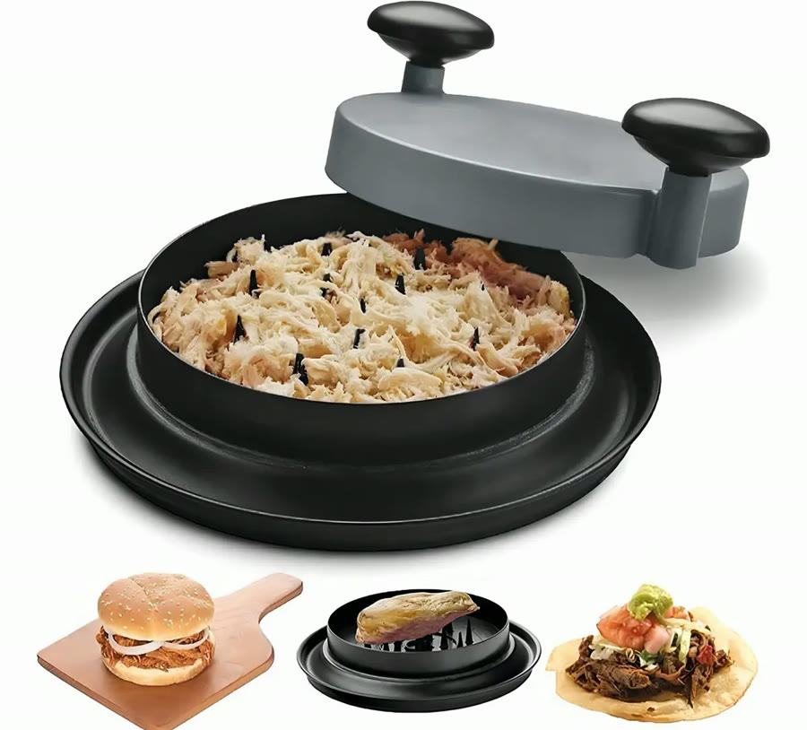
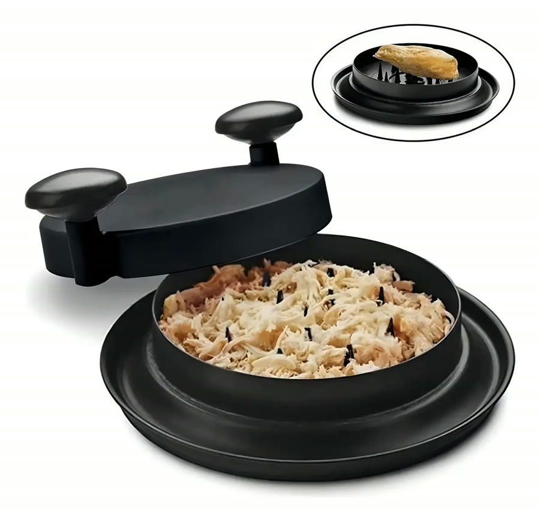
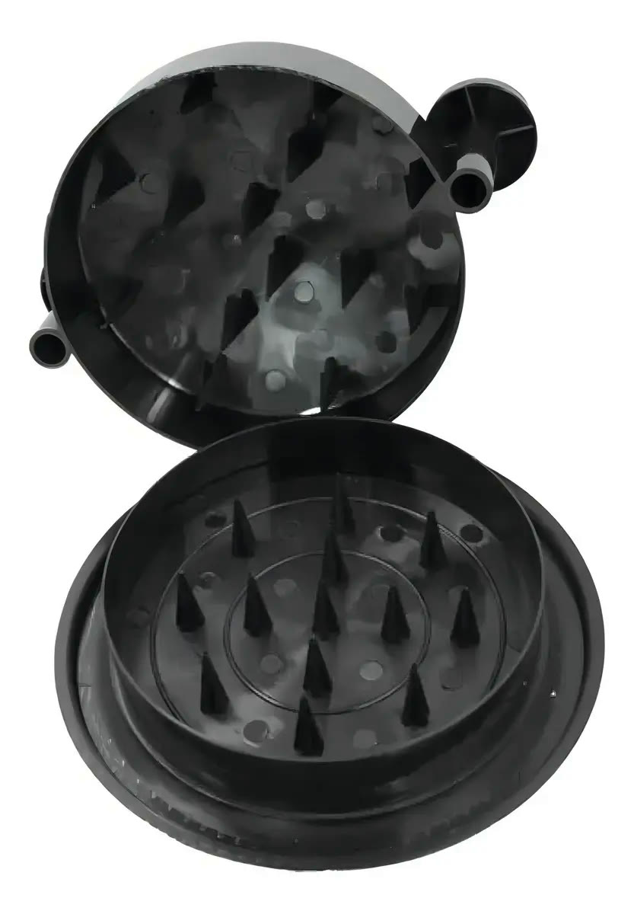
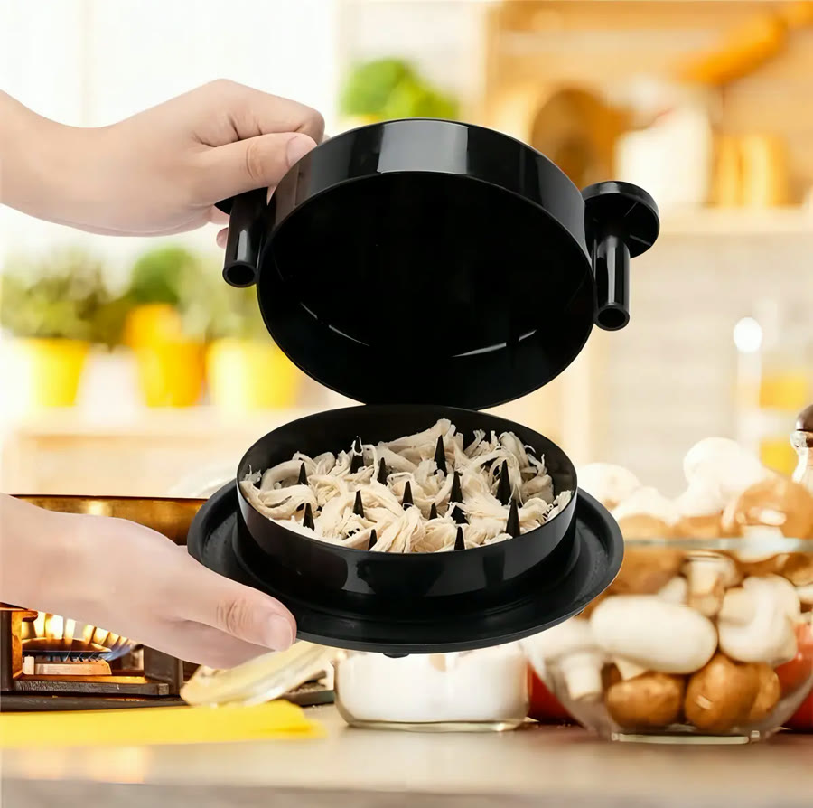
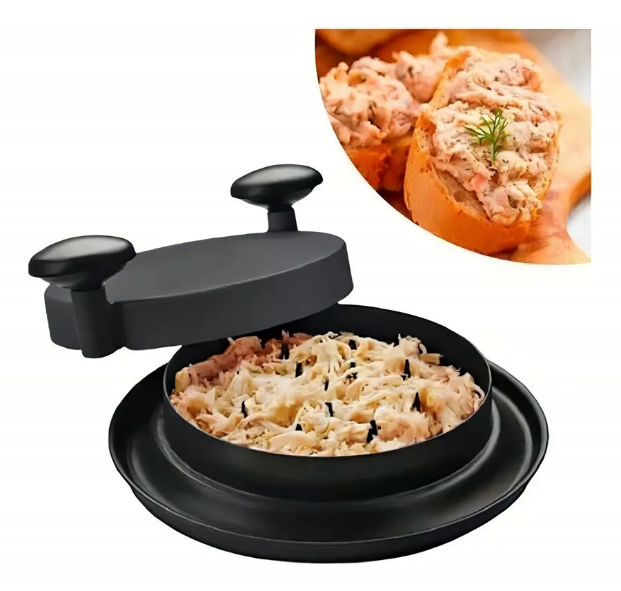

Achado nº 42
Desfiador manual de frango e carne com pinos de plástico





O que diz a página oficial do produto
- É um desfiador manual de plástico: uma base redonda e uma tampa com dois pegadores
- Por dentro, a base e a tampa têm pinos de plástico em forma de cone
- Segundo o anúncio, serve para desfiar carne, frango e peixe
- Segundo o anúncio, a base é antiderrapante
- Mede cerca de 18 por 14 por 8 cm e pesa cerca de 300 g
- É manual, não usa tomada
- Vem 1 desfiador
- No Mercado Livre, tem nota 4,6 com mais de 1.400 avaliações e mais de 5 mil vendidos
Link de afiliado: se você comprar por ele, a Achadaria pode receber uma comissão, sem custo extra para você. Preço, estoque e entrega são da loja e podem mudar; confira lá antes de comprar.